📘
Kurikulum Merdeka
Implementasi kurikulum yang memberi ruang pada pembelajaran berdiferensiasi dan penguatan karakter sesuai Profil Pelajar Pancasila.
SMAN 1 Prambon
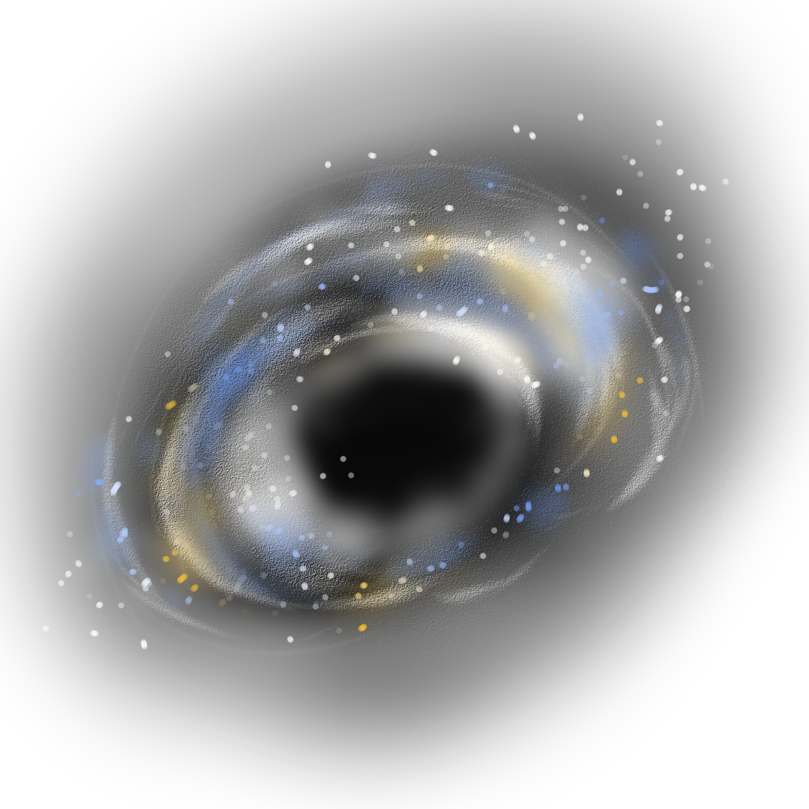
Lembaga pendidikan sekolah menengah atas negeri di Kabupaten Nganjuk yang lahir dari kebijakan pendidikan Jawa Timur dan diresmikan oleh Gubernur Basofi Soedirman. Berdiri di jalur pinggiran, tumbuh sebagai bagian dari dinamika sosial masyarakat sekitarnya.
Latar Belakang
Landasan konstitusional dan konteks sosiologis berdirinya sebuah sekolah menengah atas di wilayah Kabupaten Nganjuk.
Pendidikan merupakan usaha sadar dan terencana untuk mengembangkan potensi peserta didik agar menjadi manusia yang beriman dan bertakwa, berakhlak mulia, berilmu, mandiri, dan bertanggung jawab, sebagaimana diamanatkan dalam Undang-Undang Nomor 20 Tahun 2003 tentang Sistem Pendidikan Nasional. Dalam upaya mewujudkan tujuan tersebut, Sekolah Menengah Atas memiliki peran yang sangat strategis karena pada jenjang ini peserta didik berada pada masa pembentukan karakter dan penguasaan ilmu pengetahuan dan teknologi.
Oleh karena itu, sekolah dituntut mampu menciptakan proses pembelajaran yang aktif, inovatif, dan menyenangkan serta didukung oleh lingkungan sekolah yang kondusif dalam rangka menumbuhkan Profil Pelajar Pancasila.
SMA Negeri 1 Prambon merupakan salah satu sekolah menengah atas negeri yang terletak di Jl. Ahmad Yani No. 1, Desa Sugihwaras, Kecamatan Prambon, Kabupaten Nganjuk, Provinsi Jawa Timur. Sekolah yang berdiri sejak 29 April 1994 dan telah terakreditasi A ini memiliki visi untuk membentuk peserta didik yang berakhlak mulia, berprestasi dalam IPTEK, serta mandiri berdasarkan iman dan takwa.
Visi tersebut diwujudkan melalui berbagai program unggulan, seperti implementasi Kurikulum Merdeka, Sekolah Adiwiyata, Sekolah Ramah Anak, serta program pembiasaan keagamaan seperti kelas tahfidz dan Majelis Ta'lim. Namun dalam pelaksanaannya, masih ditemukan berbagai permasalahan di lapangan yang belum sesuai dengan harapan ideal sekolah, sehingga perlu dilakukan penelitian secara mendalam untuk mengkaji pelaksanaan program tersebut di SMAN 1 Prambon.
Visi & Program Unggulan
Membentuk peserta didik yang berakhlak mulia, berprestasi dalam IPTEK, serta mandiri berdasarkan iman dan takwa.
Implementasi kurikulum yang memberi ruang pada pembelajaran berdiferensiasi dan penguatan karakter sesuai Profil Pelajar Pancasila.
Program sekolah peduli dan berbudaya lingkungan, mendorong kesadaran ekologis peserta didik dalam keseharian di sekolah.
Mewujudkan lingkungan belajar yang aman, nyaman, dan menghargai hak serta tumbuh kembang setiap peserta didik.
Program pembiasaan keagamaan untuk penguatan hafalan Al-Qur'an sebagai bagian dari pembentukan akhlak mulia.
Kegiatan kajian keagamaan rutin yang menumbuhkan karakter beriman, bertakwa, dan bertanggung jawab.
Dorongan penguasaan ilmu pengetahuan dan teknologi sebagai bekal kemandirian peserta didik di jenjang berikutnya.
Jejak Sejarah
Sebuah lembaga pendidikan pinggiran yang mampu beradaptasi sejak masa perintisan, melewati krisis ekonomi nasional, hingga memasuki era transformasi digital modern.
SMA Negeri 1 Prambon didirikan atas kebijakan pendidikan Jawa Timur dan diresmikan pada 29 April 1994 oleh Gubernur Basofi Soedirman.
Sebagai lembaga pendidikan di wilayah pinggiran Kabupaten Nganjuk, sekolah menyesuaikan diri dengan kondisi sosial dan kebutuhan masyarakat sekitarnya.
Sekolah melewati masa krisis ekonomi nasional, menunjukkan daya tahan lembaga pendidikan lokal dalam menjaga keberlangsungan pembelajaran.
Memasuki era transformasi digital modern, sekolah menata diri melalui implementasi Kurikulum Merdeka dan penguatan program-program unggulan.
Galeri & Dokumentasi
Fasilitas, prestasi, dan kegiatan warga sekolah yang merepresentasikan dinamika pendidikan di SMA Negeri 1 Prambon.
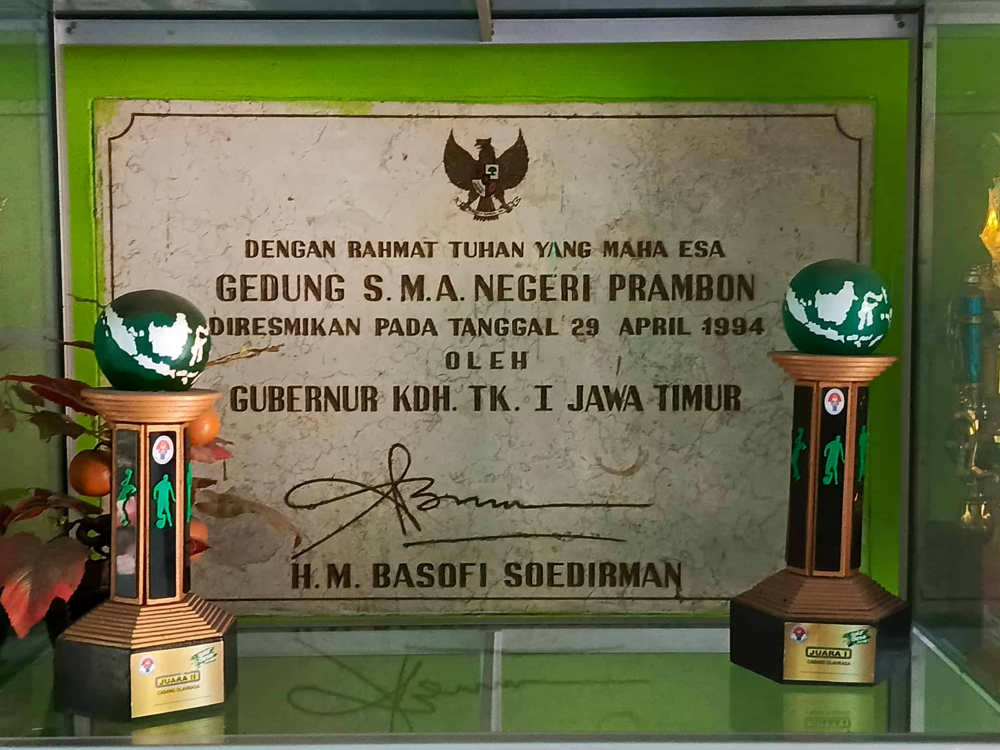
Ditandatangani langsung oleh Gubernur KDH. TK. I Jawa Timur, H.M. Basofi Soedirman pada 29 April 1994.
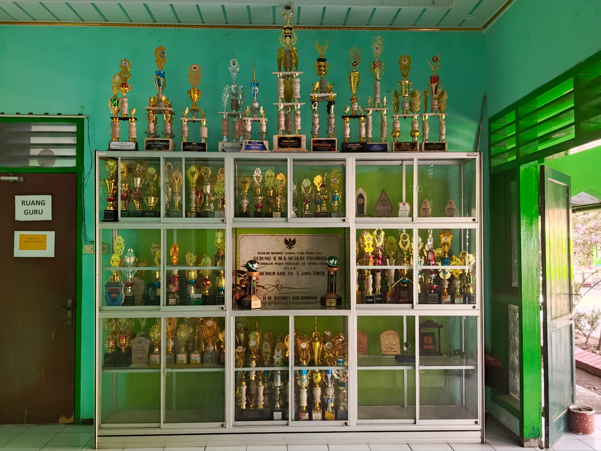
Deretan piala dan penghargaan yang berhasil diraih peserta didik, bukti nyata dari visi berprestasi dalam IPTEK dan non-akademik.
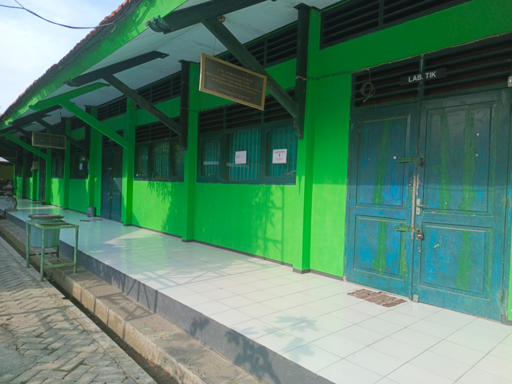
Sarana penunjang pembelajaran berbasis teknologi informasi untuk menghadapi era transformasi digital modern.
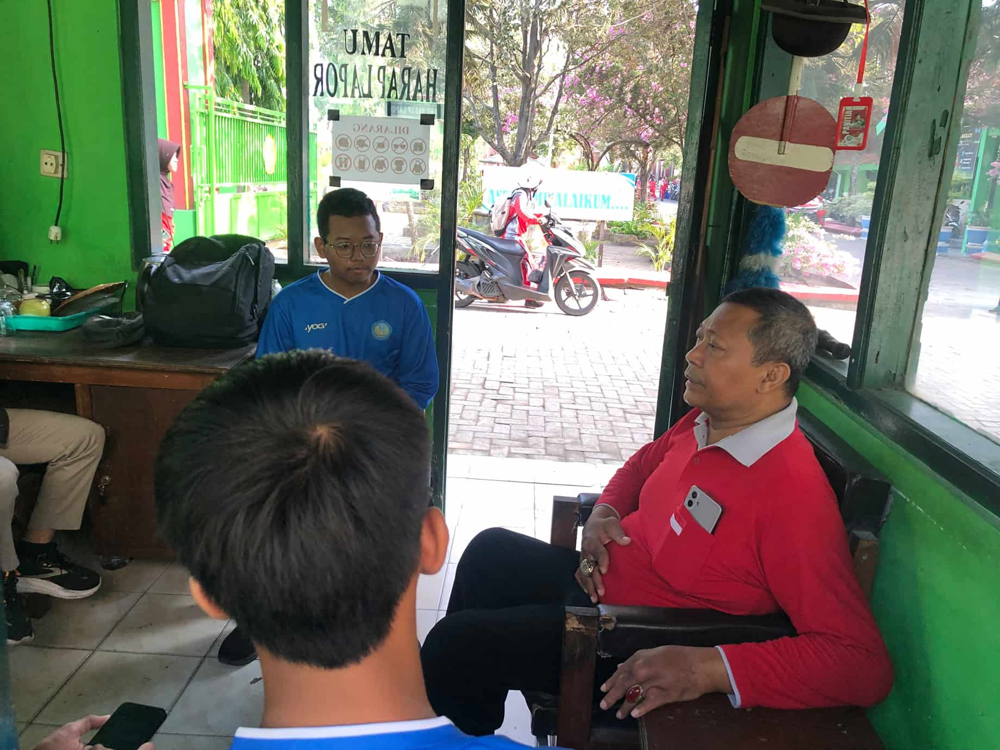
Interaksi aktif antara siswa dan tenaga pendidik, mencerminkan lingkungan belajar yang komunikatif.
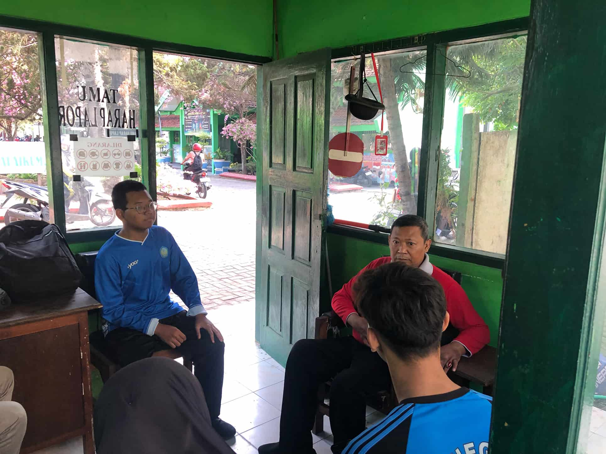
Suasana kebersamaan dan kekeluargaan dalam proses penggalian informasi di sekolah.
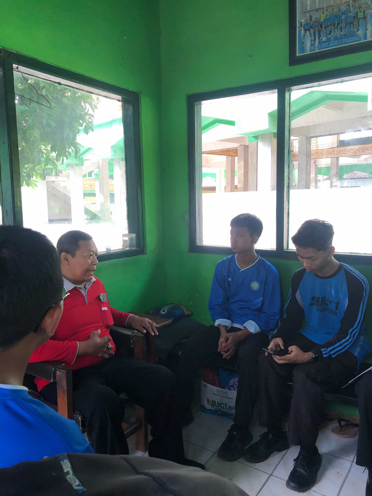
Wawancara dan penggalian informasi terkait sejarah dan program unggulan sekolah.
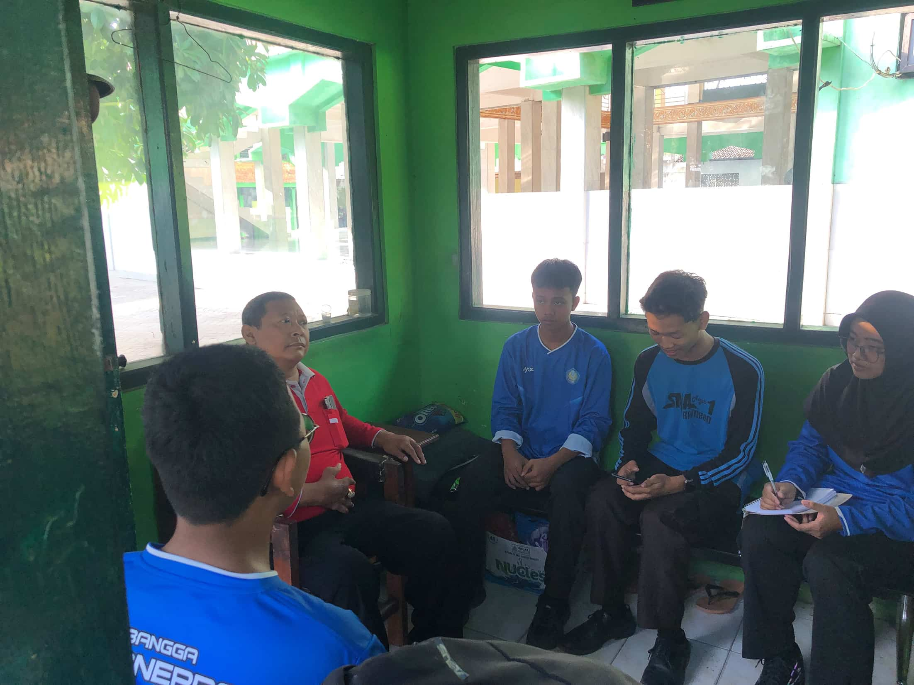
Aktivitas keseharian siswa yang penuh semangat dan antusiasme.
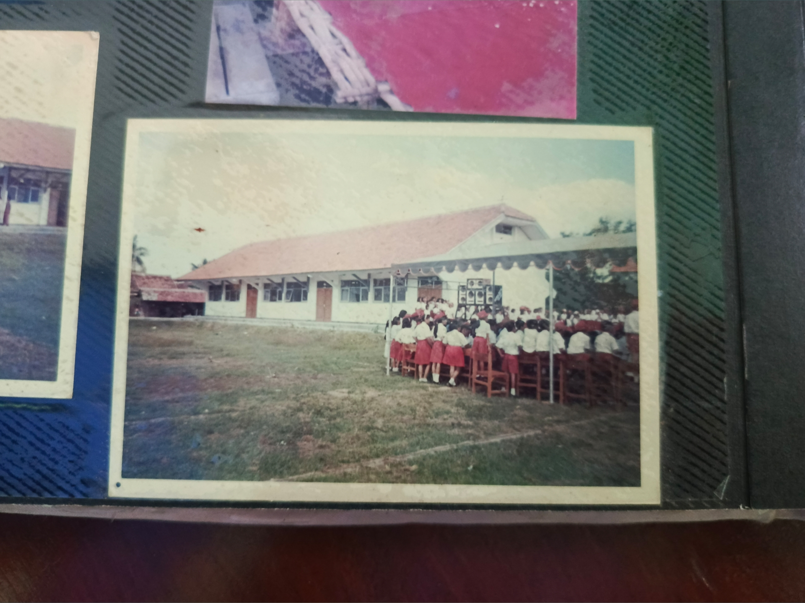
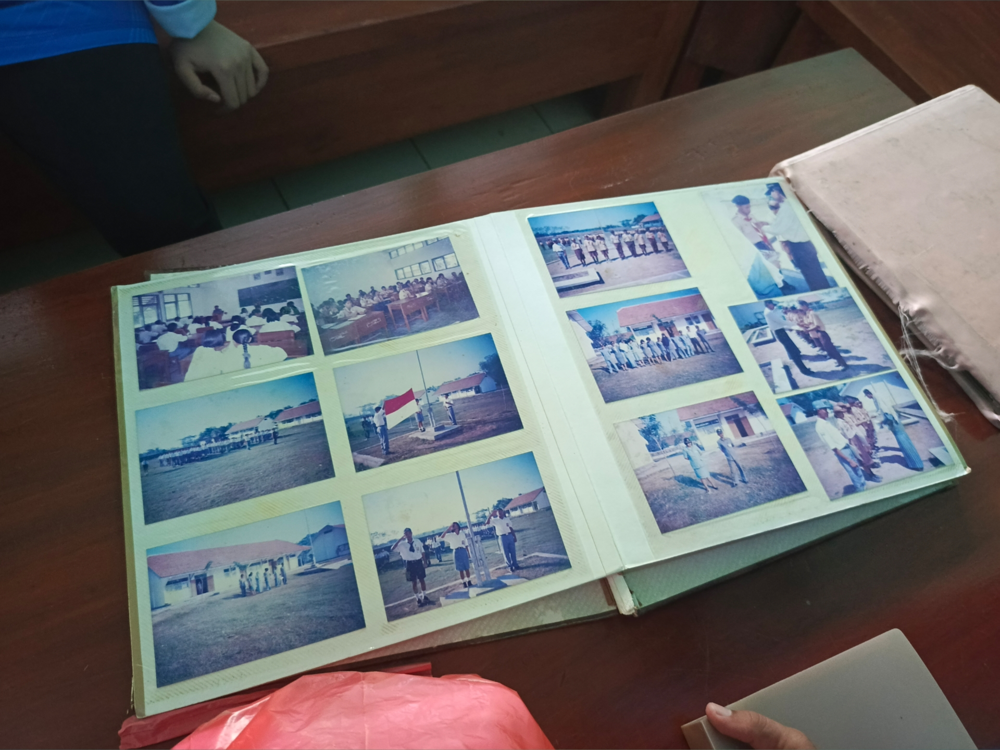
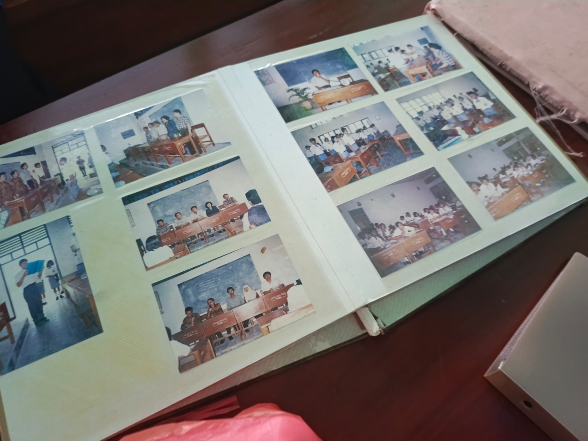
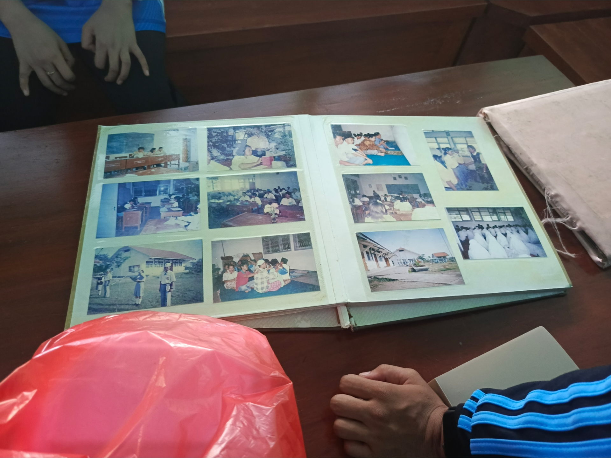
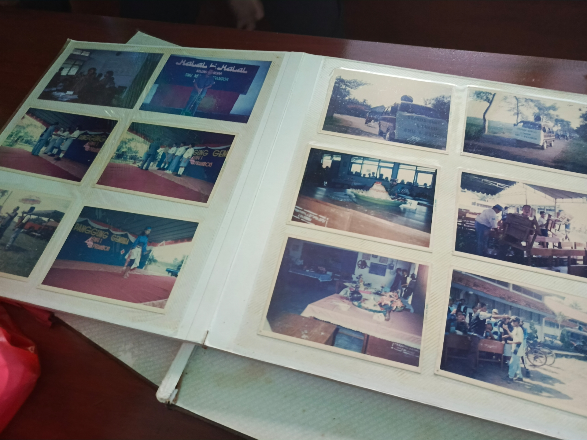
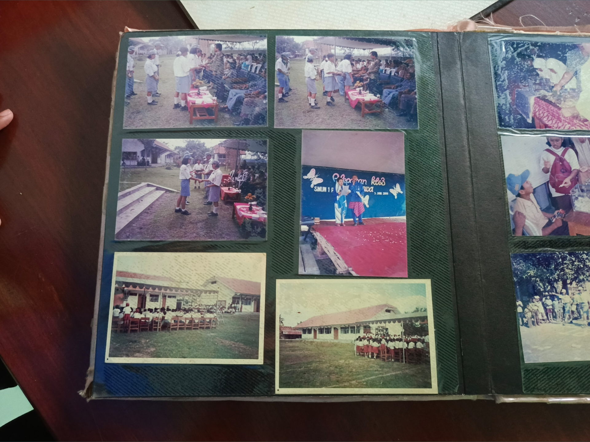
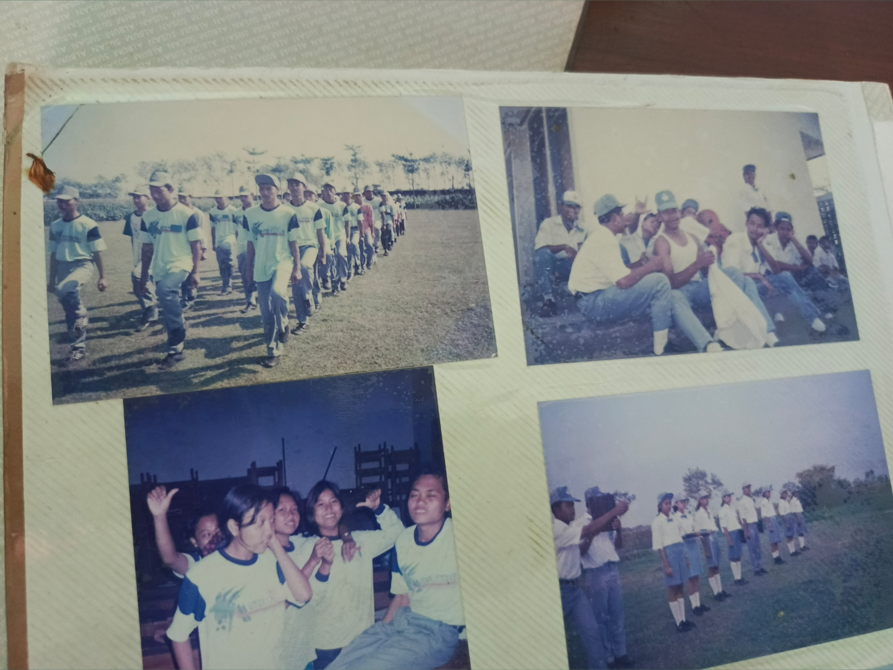
Rumusan Masalah
Penelitian sejarah mengenai instansi pendidikan lokal memegang peranan penting dalam merekonstruksi dinamika sosial masyarakat di suatu wilayah. Melalui sejarah lokal, kita dapat memahami bagaimana sebuah lembaga pendidikan lahir, berkembang, dan beradaptasi dengan masyarakat di sekitarnya.
Sejarah lokal sebagai cermin. Bagaimana SMAN 1 Prambon merefleksikan dinamika sosial masyarakat Kabupaten Nganjuk?
Rekonstruksi lembaga. Bagaimana proses kelahiran, perkembangan, dan adaptasi sekolah sebagai lembaga pendidikan direkonstruksi?
Representasi sekolah pinggiran. Bagaimana sekolah pinggiran beradaptasi dari masa perintisan, krisis ekonomi nasional, hingga era transformasi digital?
Kesenjangan harapan dan lapangan. Apa saja permasalahan yang muncul dalam pelaksanaan program unggulan di SMAN 1 Prambon?